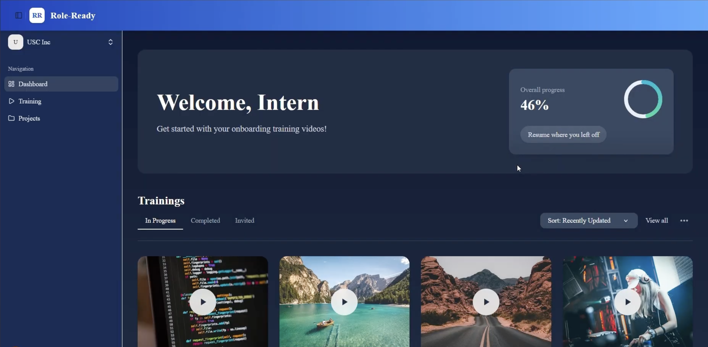
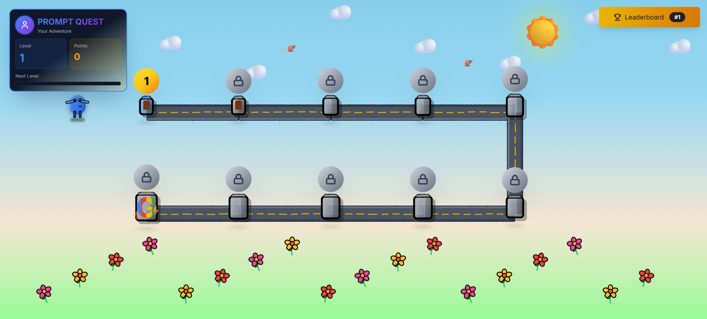
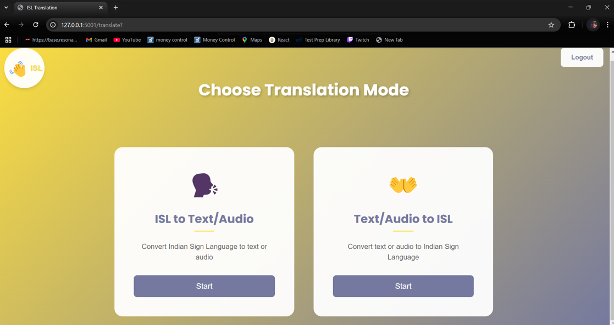
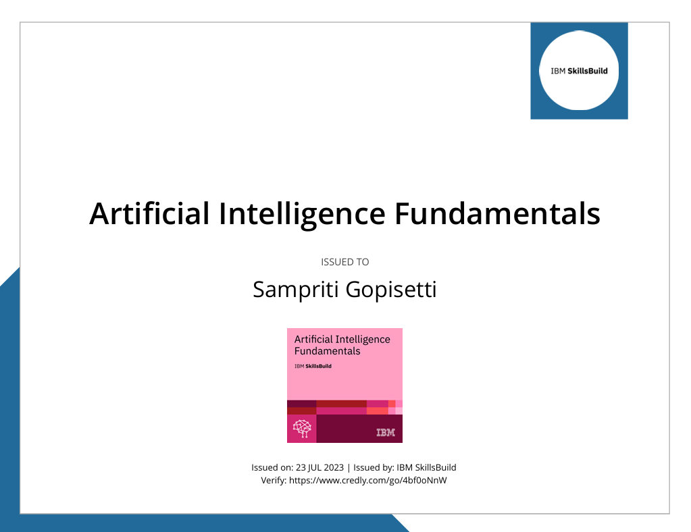
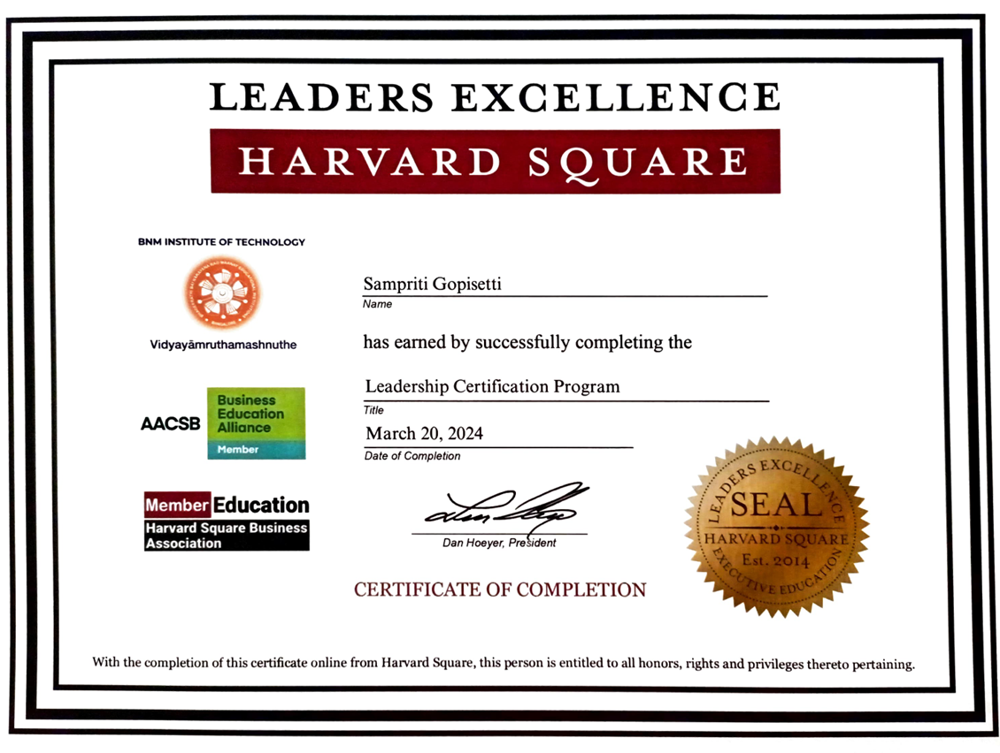
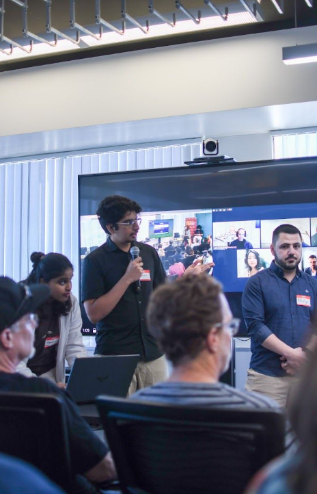
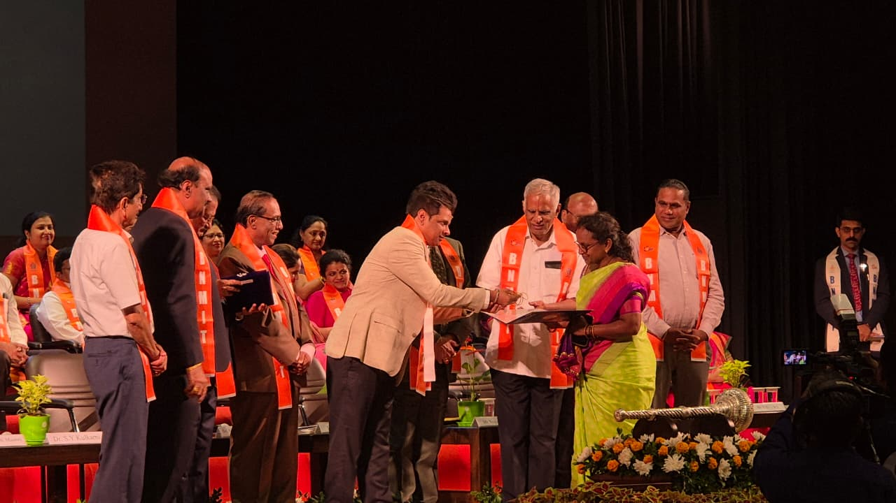
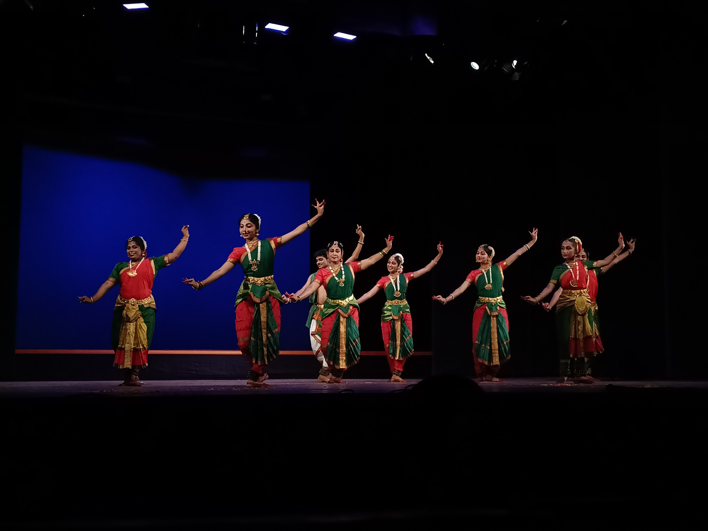

Sampriti Gopisetti
MSCS student at USC focused on building AI-powered software systems, scalable backend services, and modern full-stack applications.
About Me
I’m an MSCS student at the University of Southern California focused on building AI-powered software systems, scalable backend services, and modern full-stack applications.
My work spans GenAI, semantic retrieval, backend engineering, and machine learning systems, with projects involving RAG workflows, vector embeddings, real-time inference pipelines, and AI orchestration using technologies such as FastAPI, PostgreSQL, TensorFlow, React, Docker, and Gemini AI.
I enjoy building practical systems that turn complex workflows and unstructured information into clean, reliable, and user-friendly products.
Outside engineering, I enjoy Bharatanatyam, Carnatic music, community service initiatives, and collaborative leadership experiences that help me stay creative and grounded.
Projects

RoleReady
Built an AI onboarding platform that turns code, docs, tickets, and internal content into role-specific learning assets.

PromptQuest
Created a gamified prompt-engineering trainer that scores input quality and guides users through progressively harder challenges.

Indian Sign Language (ISL) Interpreter
PublishedBuilt a real-time ISL recognition platform that combines computer vision, deep learning, and a responsive web interface.
Experience
Improved diagnostics and reporting workflows by automating backtrace analysis and operational reporting.
- Cut bug identification time from 2–3 hours to under 10 minutes
- Isolated network issues through backend log analysis with zero defects
- Automated daily customer reports for faster data-driven decisions
Built automation bots for banking reconciliation workflows and reduced manual processing overhead.
- Deployed 10+ bots for EcoCash banking reconciliation workflows
- Cut processing time by 95%
- Reduced task completion time to under four minutes
Improved a podcasting platform with semantic search and personalized recommendations.
- Designed NLP-driven semantic search
- Built a recommendation engine for historical stories
- Made the content library more accessible and engaging
Skills
Languages
Frameworks
Databases
Cloud & DevOps
ML Frameworks
Generative AI & NLP
Computer Vision
MLOps & Backend
Tools & Technologies
Certifications

I acquired foundational knowledge and practical skills in artificial intelligence, including machine learning algorithms and data analysis.

I advanced my knowledge and practical skills in computer vision, including image processing, object detection, and visual recognition, with demonstrated proficiency through top exam performance.

I developed advanced leadership and interpersonal skills through a prestigious series of courses, achieving results that distinguished me from my peers.
Leadership & Extracurriculars

Won first prize under the Vercel Award category for PromptQuest.

Awarded 2 Gold Medals as Computer Science branch topper at BNM Institute of Technology.

Learnt Bharatanatyam for six years, successfully completing the Junior level certification.
Get In Touch
Sampriti Gopisetti